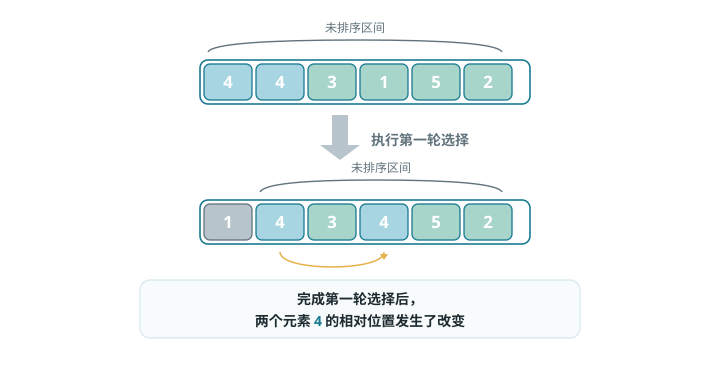

选择排序（Selection Sort）
选择排序的工作原理非常简单：开启一个循环，每轮从未排序区间选择最小的元素，将其放到已排序区间的末尾。
设数组的长度为 n，选择排序的算法流程如图所示。
- 初始状态下，所有元素未排序，即未排序（索引）区间为 [0, n-1]。
- 选取区间 [0, n-1] 中的最小元素，将其与索引 0 处的元素交换。完成后，数组前 1 个元素已排序。
- 选取区间 [1, n-1] 中的最小元素，将其与索引 1 处的元素交换。完成后，数组前 2 个元素已排序。
- 以此类推。经过 n-1 轮选择与交换后，数组前 n-1 个元素已排序。
- 仅剩的一个元素必定是最大元素，无须排序，因此数组排序完成。
算法特性
- 时间复杂度为 O(n²)、非自适应排序：外循环共 n-1 轮，第一轮的未排序区间长度为 n，最后一轮的未排序区间长度为 2，即各轮外循环分别包含 n、n-1、...、3、2 轮内循环，求和为 (n-1)(n+2)/2。
- 空间复杂度为 O(1)、原地排序：指针 i 和 j 使用常数大小的额外空间。
- 非稳定排序：如图所示，元素 nums[i] 有可能被交换至与其相等的元素的右边，导致两者的相对顺序发生改变。

Baseline 任务 1：选择排序的基础实现
任务内容
完成 SelectSort.cpp，实现选择排序：
- 每次从未排序区间找到最小值，放到已排序区间末尾
- 基于比较的原地排序算法
- 时间复杂度：O(n²)
- 空间复杂度：O(1)
- 不稳定排序
验证方式
- 编译：
g++ testSelectSort.cpp SelectSort.cpp -o testSelectSort - 运行：
./testSelectSort
Baseline 任务 2：选择排序算法的优化
在实践中，我们会发现选择排序存在明显的短板：例如，在每一轮都只能找到一个最值，无法利用遍历过程中获取的信息；或者，在面对大量重复元素时，效率低下。
这些问题都指向了一个方向：选择排序还有很大的优化空间。
任务内容：双向选择排序（双端选择排序）
传统的简单选择排序，每一轮遍历只找到一个最小值，放到序列的前端。尝试实现双向选择排序：
- 核心思想：在每一轮遍历中，同时找到当前未排序部分的最小值和最大值，并将它们分别放到序列的两端。
- 要求：
- 实现
void TwoWaySelectSort(vector<int>& arr)函数。 - 编写测试程序，验证该算法在不同场景下的正确性（如随机数组、有序数组、逆序数组）。
- 分析其与简单选择排序的时间复杂度对比（理论与实际运行时间），并解释其改进点。
- 实现
文件结构
SelectionSort.h：选择排序函数声明SelectionSort.cpp：选择排序核心算法实现testSelectionSort.cpp：测试程序，验证排序功能正确性